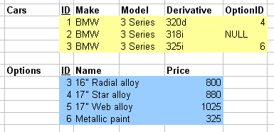
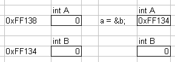
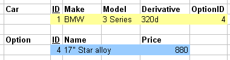
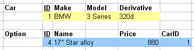
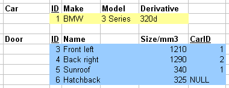
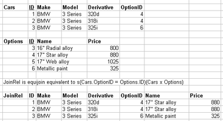
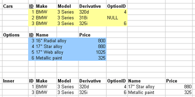
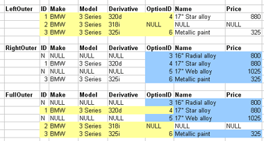

In this lecture we look at...
[Section notes PDF 233Kb].

One number identifies a single tuple in one relation (local), one number identifies a single tuple in another relation (foreign).
int a=0; int b=0; a = &b;

In databases, typically done with unique identifiers (IDs) rather than memory addresses.
typedef struct car
{
int ID;
char[] make;
char[] model;
char[] derivative;
int optionID;
} car;
typedef struct option
{
int ID;
char[] name;
int price;
} option;
car c;
option o;
//...data structure populating
c.optionID = o.ID;





